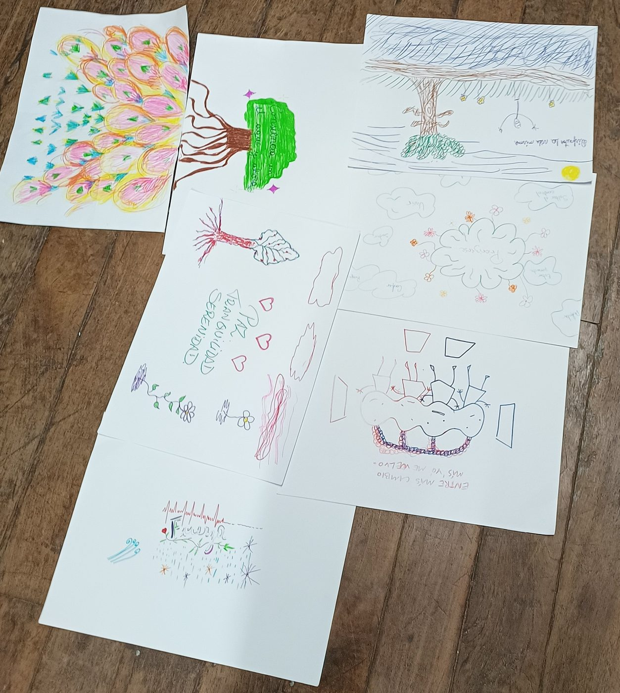

Salir del piloto automático y de la "sala de espera" para volver a la vida que está ocurriendo ahora.
Partimos con un repaso de Alba Emoting, recordando cómo vive cada emoción en el cuerpo, y con dos juegos para encontrarnos y activarnos como grupo.
Luego profundizamos en la lectura "¿Vivimos antes de morir?". Muchas veces vivimos en piloto automático o en una sala de espera, aguardando que la vida de verdad empiece después. El mensaje es claro: habitar el presente. Y eso se entrena con la atención plena:
Escuchamos el cuento "El cementerio de Kammir" de Jorge Bucay, y calculamos las horas de vida que aún tenemos por delante para elegir cómo vivirlas.
Después vino la musicoterapia: en dos grupos creamos un cuento sonoro con "El pescador y la tormenta", poniéndole viento, lluvia y mar con nuestros instrumentos. Así descubrimos que la calma no está en evitar la tormenta, sino en escucharla.
Cerramos con arteterapia: frente a un lienzo en blanco, cada persona puso al centro lo que le hizo sentido y lo desarrolló libremente. Luego unimos todas las creaciones en el suelo para formar un mural colectivo, y despedimos el encuentro con una música improvisada entre todos.

Árboles, flores, nubes, raíces y palabras como paz, tranquilidad y serenidad. Cada lienzo cuenta un camino personal, y juntos forman un paisaje de recursos para el bienestar.
Algunos momentos del segundo encuentro. Toca una foto para verla en grande.
🎶 Los cuentos sonoros y el cierre
La meditación se apoya en tres pilares: la respiración, la postura y la actitud. Esta semana te invitamos a entrenar la postura: un cuerpo erguido y relajado, firme y a la vez cómodo, que se vuelve casa para la atención.
Cómo practicar:
Audio de la Escuela Española de Desarrollo Transpersonal (escuelatranspersonal.com), utilizado con su autorización.
¿Quién se da cuenta de que estás pensando? Una lectura breve sobre la conciencia testigo, la meditación y la atención plena como caminos para observarnos sin juicio y dejar de vivir en piloto automático.
De lo que vivimos el sábado (habitar el presente, la conciencia testigo, la aceptación, el amor ternura, el cuento sonoro, los juegos, el mural…), ¿qué se quedó contigo durante la semana? Compártelo aquí: una palabra, una frase o lo que necesites decir.
Muy pronto podrás dejar aquí tu reflexión. Mientras tanto, compártela en el grupo de WhatsApp 💚
Las reflexiones se publican de forma anónima. Antes de aparecer aquí pueden tardar unos minutos.